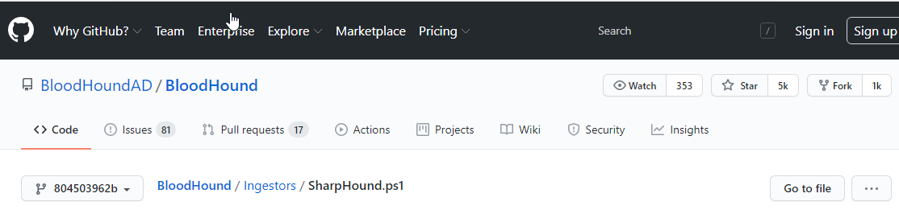

1.invoke bloodhound fromm powershell
2.sharphound
3.python tool too
would use the first one
are actually using sharpHound hi like

went here and donwloaded it on the puniseher logged in as Frank Castle
get the other windows machine running too

before this we ran . .\ShellHound.ps1
now copy this file1.zip to kali somehow
now import this file to your kali
thus imported it now

import it in bloodhound

to find the domain admins

sqlservice
tony stark
marvel.adminstrato
all these are domain admins
for shortest path:


bootom left green is fcastle which is admin to red one which is tghe punisher.marvel.local which has session on Adminstrator@marvel.local which in turn is a member of domain admin@marvel.lcal
the final one basically
SO token impersonation
u want to target machines where domain admin is logged in
so thats the shortest path
for shortest path from kerberostable users

select lets say sql service

thus sql service is connceted to domain admin and to whihc spiderman as well as punisher has access too
below is shortest path to high value targets

so thus its just 9users and 3 comouters so its damn complex bt graph helps us
THE PRE-BUILT ANALYTICS QUERIES are more than enough even though u can write ur own too
enumeration is very very important for pentester ke liye
now post exploitation attacks once we have compromised one account how can we leverage that and get access to full netwroks and stuff